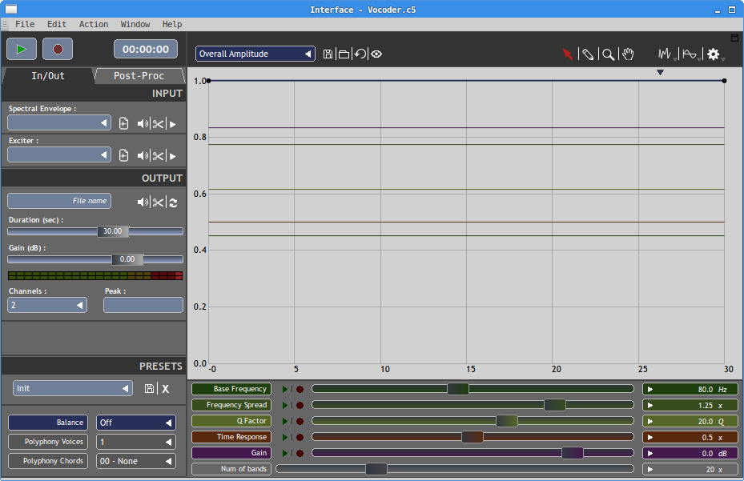
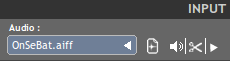
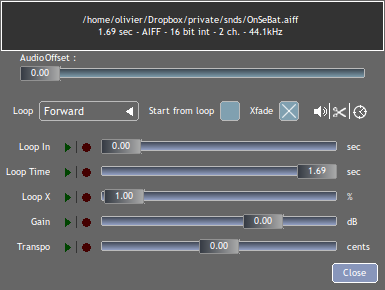
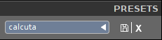
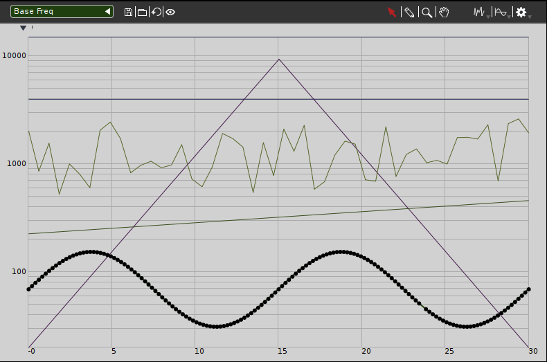

Cecilia Interface¶
In Cecilia, all built-in modules come with a graphical interface, which is divided in different sections, common to all treatment and synthesis modules of the software: the transports panel, the In/Out and Post-Processing tabs, the Presets section, the grapher, toggles&popups and the sliders that control the parameters of the module. All these sections will be described in this chapter.
{kind=link}
Transport panel¶
The transport section contains a window that indicates the current time of the playback and two buttons: Play/Stop and Record.

Play/stop button: Press to launch playback of the output sound file. Click again to stop.
Record button: Press to record the output sound to a sound file in realtime. You will hear the playback but priority is given to disk writing. A “Save audio file as …” dialog window will appear if the output file name is not already defined. If multiple recordings with the same output file name are done, Cecilia will append “_xxx” to file names, where “xxx” is a three digits incremented number.
By default, all sound files will be recorded in AIFF format (soundfile format and resolution can be changed in the preferences panel) and will be named by the name of the module (with the extension .aif).
Input - Output¶
The In/Out tab, which is situated below the transport panel, features different control options related to the input/output sound files.
Input¶
This section is only provided with the treatment modules. To import an audio file from hard drive, click on the popup menu, below the label “Audio”, and select your file from the standard dialog. Accepted file formats are WAV, AIFF, FLAC, OGG, SD2, AU or CAF. All audio files located in the same folder as the chosen file will be loaded in the popup menu. To open the popup menu and select another pre-loaded soundfile, click on the triangle at the right of the menu.
Hint : A right-click on the popup menu will open a window with the last opened sound files, for a quick access.
Input modes
The icon just at the right of the popup menu lets the user to switch the input mode of Cecilia. Four modes are available:

mode 1 : classic mode, load a soundfile in a sampler or a table.

mode 2 : uses the live input sound (eg. inputs from soundcard) to feed the module’s processing (not available with modules using a table as input (ex. Granulator)).
mode 3 : uses the live input sound (eg. inputs from soundcard) to fill the sampler buffer (instead of loading a soundfile).

mode 4 : uses a double buffer to continuously fill the sampler with new samples from the live input sound (not available with modules using a table as input).
Input tools
In the Input section, the toolbox at the far right presents three icons that are shortcuts to some features of Cecilia:
Click on the loudspeaker to open the imported sound file with your favorite sound player. If no application has been selected in the Preferences yet, a dialog window will appear.
Click on the scissors to edit the sound file in an editor application. If no application has been selected in the Preferences yet, a dialog window will appear.
Click on the triangle to open the sampler frame dialog window for more options on the source sound file.
Sampler Controls
In this window, as in the main Input section, click on the loudspeaker to play the source sound file or on the scissors to edit the source sound file with an external application. Click on the icon clock to set the duration of the output sound to the source sound duration.
Controls over the sampler behaviour are:
The “Audio Offset” slider sets the offset time into the source sound (start position in the source sound file). In the “Loop” menu, there are four options available: Off (no loop), Forward (forward loop), Backward (backward loop) and Back & Forth (forward and backward loop in alternance).
If the “Start from loop” box is checked, Cecilia will start reading the sound file from the loop point.
The “Xfade” widget controls the shape of the crossface between loops. Choices are: Linear, Equal Power and Sine/Cosine.
The “Loop In” slider sets the start position of the loop in the source soundfile.
The “Loop Time” slider sets the duration (in seconds) of the loop.
The “Loop X” slider sets the duration of the crossfade between two loops (percentage of the total loop time).
The “Gain” slider sets the intensity (in decibels) of the sound source.
Move the “Transpo” slider to transpose (direct transposition) the looped sound. The duration of the loop is affected by the transposition, as while reading a tape at different speeds.
Automations
All settings can be controlled through automations. To record an automation, click on the red circle on the left side of the slider and press play (on the transport bar) to start the playback. All slider variations will then be recorded and exposed in the grapher at the end of the playback. Afterwards, you can modify the automation curve in the graphic (see the corresponding following section). Then, click on the green triangle to enable automation while playing the sound file.
Bindings
As with module’s sliders below the grapher, sampler sliders can be controlled with MIDI controller or OSC device. Start the MIDI learn algorithm with a Right-Click on the slider label or open the OSC assignation window with a Double-Click on the slider label. See MIDI - OSC Control for more details.
Output¶

This section contains all options for recording the audio file on hard drive. Click on the “File name” label to choose the name and repertory of the audio file to record. Then, two sliders allows you to choose the duration (in seconds) and the gain (in decibels) of the output file. Choose the desired number of audio channels with the “Channels” popup menu. The “Peak” bar indicates the maximum intensity of the processed audio signal.
In the Output section, the toolbox at the far right presents three icons that are shortcuts to some features of Cecilia:

In the Output section, as in the Input section, click on the loudspeaker to play the source sound file or on the scissors to edit the source sound file with an external application (see above). Click on the arrows to use the output sound file as the source sound.
Post-Processing¶
The post-processing tab is situated below the transport panel, just beside the In/Out tab.

In this tab, you can add post-processing effects on the output audio file. It is possible to add up to 4 post-processing modules. Signal routing is from top to bottom (but the order can be changed with the little arrows in the top-right corner of each slot. Set audio parameters with the buttons on the left side.
Choose the post-processing module in the “Effects” menu. The “Type” menu allows you to alternate between active module and bypass or to make a choice between different options, depending of the module.
Automations
All “plugin” parameters can be controlled through automations. To record an automation, Double-Click on the the little dot of the knob (it will turn red) and press play (in the transport panel) to start the playback. All knob variations will then be recorded and exposed in the grapher at the end of the playback, the dot will turn green. Afterwards, you can modify the automation curve in the graphic (see the corresponding following section). Another Double-Click will turn off both automation recording and playback.
Bindings
As with module’s sliders below the grapher, post processing knobs can be controlled with MIDI controllers. Start the MIDI learn algorithm with a Right-Click on the knob. See MIDI - OSC Control for more details.
Reverb¶
Simple reverb effect using the Freeverb algorithm.
Parameters
Mix: dry/wet mix
Time: reverberation time in seconds
Damp: filtering of high frequencies
In the “Type” menu, you can choose between activate and bypass the effect.
WGVerb¶
Simple reverb effect using a network of eight interconnected waveguides.
Parameters
Mix: dry/wet mix
Feed: depth of the reverb
Cutoff: lowpass cutoff in Hertz
In the “Type” menu, you can choose between activate and bypass the effect.
Filter¶
Variable state recursive second order filter.
Parameters
Level: gain of the filtered signal
Freq: cutoff or center frequency of the filter
Q: Q factor/filter resonance.
In the “Type” menu, you can choose between four types of filters : lowpass, highpass, bandpass and band reject. You can also select “bypass” to bypass the effect.
Chorus¶
Delay-based chorus effect.
Parameters
Mix: dry/wet mix
Depth: amplitude of the modulation
Feed: Amount of output signal fed back into the delay lines.
In the “Type” menu, you can choose between activate and bypass the effect.
Para EQ¶
One band parametric equalizer.
Parameters
Freq: cutoff or center frequency of the filter
Q: Q factor/filter resonance
Gain: intensity of the filtered signal, in decibels.
In the “Type” menu, you can choose between three types of equalizers: Peak/Notch, Lowshelf and Highshelf. You can also select “bypass” to bypass the effect.
3 Bands EQ¶
Three bands amplitude control.
Parameters
Low: boost/cut, in dB, for a lowshelf with a cutoff at 250 Hz
Mid: boost/cut, in dB, for a peak/notch with a center frequency at 1500 Hz
High: boost/cut, in dB, for a highshelf with a cutoff at 2500 Hz
In the “Type” menu, you can choose between activate and bypass the effect.
Compress¶
Dynamic range reducer.
Parameters
Thresh: compression threshold, in decibels
Ratio: compression ratio
Gain: intensity of the compressed signal, in decibels.
In the “Type” menu, you can choose between activate and bypass the effect.
Gate¶
A noise gates attenuates signals that register below a given threshold.
Parameters
Thresh: in decibels - threshold below which the sound is attenuated
Rise: rise time or attack, in seconds
Fall: release time, in seconds.
In the “Type” menu, you can choose between activate and bypass the effect.
Disto¶
Arctangent distortion with lowpass filter.
Parameters
Drive: intensity of the distorsion; from 0 - no distorsion - to 1 - square transfert fonction
Slope: normalized cutoff frequency of the low-pass filter; from 0 - no filter - to 1 - very low cutoff frequency
Gain: level of the distorted signal, in decibels.
In the “Type” menu, you can choose between activate and bypass the effect.
AmpMod¶
Stereo amplitude modulation effect.
Parameters
Freq: frequency of the modulating wave
Amp: amplitude of the modulating wave
Stereo: phase difference between the two stereo channels; from 0 - no phase difference - and 1 - left and right channels are 180 degrees out-of-phase.
In the “Type” menu, you can choose between amplitude modulation (Amplitude) and ring modulation (RingMod) or bypass the effect.
Phaser¶
Phasing effect based on all-pass filters that generates resonance peaks in the spectrum.
Parameters
Freq: frequency of the first all-pass filter
Q: Q factor/filter resonance
Spread: spread factor - exponential operator that determinates the frequency of all other all-pass filters.
In the “Type” menu, you can choose between activate and bypass the effect.
Delay¶
Delay with feedback.
Parameters
Delay: delay time, in seconds
Feed: feedback factor, between 0 and 1
Mix: dry/wet mix.
In the “Type” menu, you can choose between activate and bypass the effect.
Flange¶
Swept comb filter effect.
Parameters
Depth: amplitude of the LFO that modulates the delay. The modulation is set around a central time of 5 milliseconds
Freq: frequency of the modulating LFO
Feed: feedback factor - enhances the resonances in the spectrum.
In the “Type” menu, you can choose between activate and bypass the effect.
Harmonizer¶
Transpose the signal without changing its duration.
Parameters
Transpo: transposition factor, in semi-tones
Feed: feedback factor
Mix: dry/wet mix.
In the “Type” menu, you can choose between activate and bypass the effect.
Resonators¶
Audio effect based on delays that generates harmonic resonances in the spectrum.
Parameters
Freq: frequency of the first harmonic resonance
Spread: spread factor - exponential operator that determinates the frequency of all other harmonic resonances
Mix: dry/wet mix.
In the “Type” menu, you can choose between activate and bypass the effect.
DeadReson¶
Similar to the Resonators effect. In this case, the harmonic resonances are slightly detuned.
Parameters
Freq: frequency of the first harmonic resonance
Detune: detune of the other harmonic resonances
Mix: dry/wet mix.
In the “Type” menu, you can choose between activate and bypass the effect.
ChaosMod¶
Amplitude modulation with a strange attractor as the waveform.
Parameters
Speed: relative frequency of the oscillator
Chaos: control the periodicity of the waveform: 0 means nearly periodic, 1 means totally chaotic
Amp: amplitude of the modulating wave
In the “Type” menu, you can choose between three attractors (Lorenz, Rossler and ChenLee) or bypass the effect.
Presets¶
The Presets panel allows you to save snapshots of the state of the current module and recall them as wanted. This is very useful to keep track of the work done within a module. Anytime a preset is added or removed from the popup, it is automatically saved (or deleted) to a file in cecilia5 resources folder (~/.cecilia5/presets/moduleName/presetName).
Use to floppy disk to save a new preset and the “X” button to delete the currently loaded preset. Use the popup menu to select a preset to load.
Grapher¶
The grapher is the central element of Cecilia. This is where the evolution of the module parameters over time will be defined. The toolbar above the grapher allows you to select the parameter to be edited, the behavior of the mouse or the desired curve generator.
Here are the details of the available tools in the grapher’s toolbar.
Grapher popup
Use the popup to select a parameter line for editing. The chosen parameter will become front in the grapher and ready to be modified with the mouse or the generators.
Grapher line tools
Use these tools to manage the current parameter line on grapher.
Floppy disk - Save the current line parameters to the disk.
Folder - Load the current line parameters from disk.
Arrow - Reinitialize the current line parameters.
Eye - Show/Hide the current line on grapher.

Grapher’s mouse bindings
This is the list of possible mouse interactions with the grapher.
- Arrow - Use pointer tool (shortcut = “v”)
Click and drag line to move it horizontally.
Double-click on line to toggle between curved and straight segments.
Click on point or drag to select points.
Click and drag to move point or selected points.
Holding Alt key when dragging clip the horizontal position.
Holding Shift+Alt key when dragging clip the vertical position.
Double-click anywhere to add point.
Delete key to delete selected points.
- Pencil - Use pencil tool (shortcut = “p”)
Click anywhere to add point.
Click and drag to add multiple points.
- Magnifying glass - Use zoom tool (shortcut = “z”)
Click and drag to zoom a region.
Escape key to reset zoom level.
- Hand - Use hand tool (shortcut = “h”)
When zoomed, click and drag to move view of the grapher.
Line generators
These tools open a window where controls can be set to fine-tune the chosen algorithm which generates points for the current line on the grapher.
Random line - Various stochastic function generators.
Sine wave - Various waveform function generators.
Gears - Various function processors which modify the current line’s points.
Sliders¶
The sliders section shows most of the dynamic parameters of the module. Coloured sliders can be automated and the grapher contains a corresponding line for them. Grey sliders are either only active at initialization time or send their value on the mouse up event. They can’t be automated.

There is a label at the left of the slider. It shows the name of the parameter and has some mouse events bound to it. Here is the list:
Click on it to select the parameter in the grapher.
Shift-click to solo the parameter in the grapher.
Right-click to start midi learn on this slider.
Shift-Right-click to remove the current midi binding on the slider.
Double-click to set an OSC binding on this slider.
The red circle and green triangle buttons can be used to record slider’s movements in the grapher and play them back on a later run.
The playback mode can be one of:
Dark green - Playback off.
Light green - Playback with visual update.
Yellow - Playback without visual update.
The display at the right of the silder shows its current value. Click in to enter value from keyboard. Click and scroll on value to increment/decrement, left<->right position of the mouse on the value controls the increment size.
Popups&Toggles¶
The Popups&Toggles section shows the discreet parameters of the module. here you will find tools to activate/deactivate processing parts, choose a filter type, define a waveform’s harmonics, choose a compression format, etc.